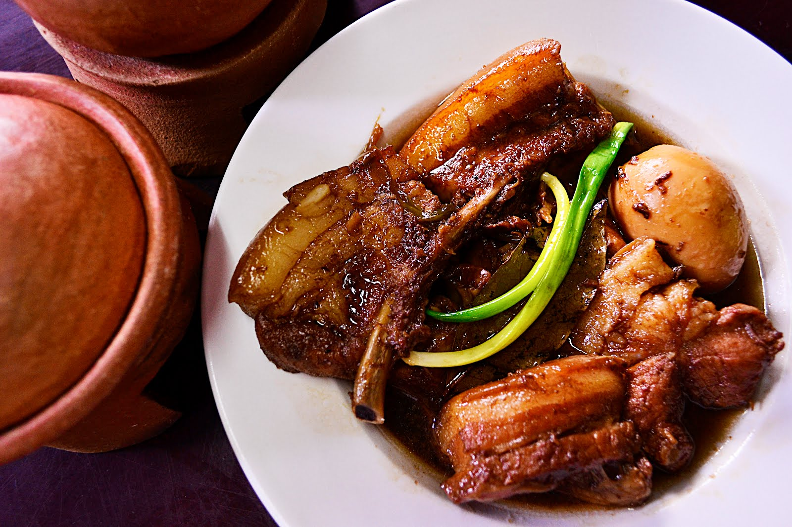

go home.
Humba

Humba is a dish of tender pork, salted black beans, and an assortment of spices.
With its deep flavor palate and numerous ingredients, it is the perfect combination
of sweet and savory –– two such flavors that Filipinos adore.
Ingredients
- 2 lbs Pork Belly
- 1 cup Pineapple Juice
- 1 Large Onion(diced)
- 5 cloves Garlic(minced)
- 2 tablespoons Salted Black Beans
- 2 tablespoons Vinegar
- 2 1/2 tablespoons Brown Sugar
- 1/2 cup Dried Banana Blossoms
- 2 pieces Dried Bay Leaves
- 1 tablespoon Whole Peppercorn
Directions
- Heat the cooking pot then brown the pork belly.
- Add the onions and garlic and cook until the onions are soft.
- Put-in the soy sauce, peppercorn, bay leaves.
- Pour-in the pineapple juice and let boil. Simmer until the pork is tender (add water as needed).
- Add the vinegar and wait for the mixture to re-boil. Simmer for 3 minutes.
- Spoon-in the salted black beans and brown sugar then simmer for 5 minutes.
- Add the dried banana blossoms and simmer for 5 to 8 minutes.
- Transfer to a serving plate and serve. Share and enjoy!